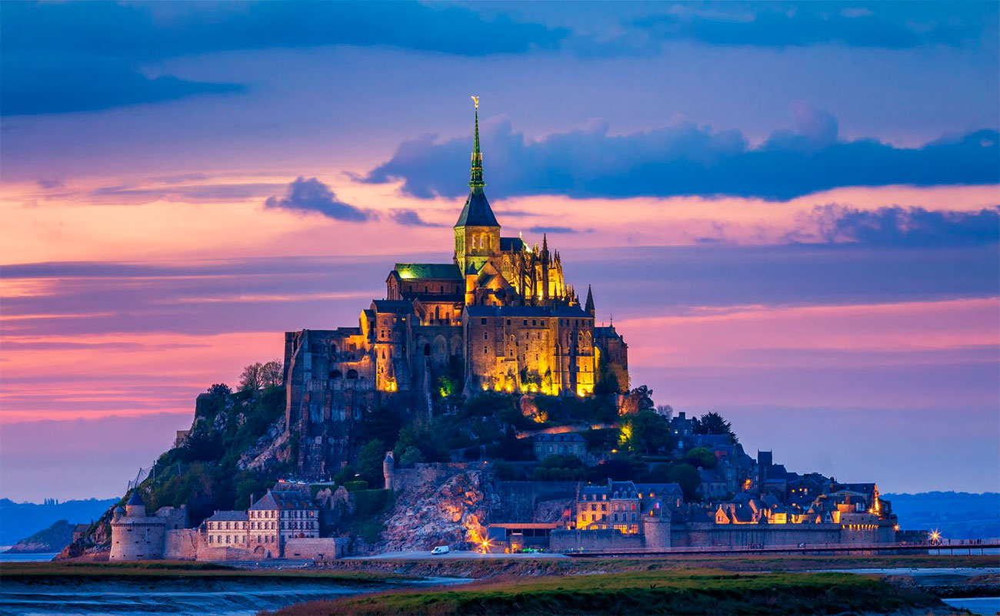

Inicio
Francia (en francés, France), oficialmente República Francesa (République française), es un país soberano, miembro de la Unión Europea, constituido en Estado social y democrático de derecho y cuya forma de gobierno es la república semipresidencialista.
Su territorio, que incluye regiones de ultramar, se extiende sobre una superficie total de 643 801 km² En 2015 el país contaba con 66,3 millones de habitantes, en la Francia metropolitana y en los territorios de ultramar.
learn more
